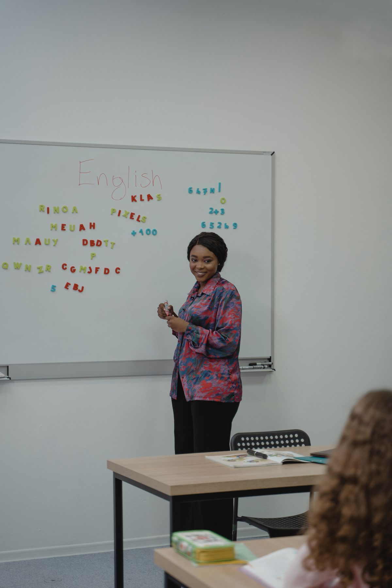

آیلتس (IELTS)
آمادگی آزمون آیلتس با تمرین هر چهار مهارت — شنیدن، خواندن، نوشتن و صحبت کردن — و آشنایی با ساختار آزمون.
ارس در فلکه دوم صادقیه تهران — آموزش زبان انگلیسی، آیلتس، دورههای CPE/CAE/FCE و TTC. تعیین سطح رایگان انجام دهید و کلاس مناسب خودتان را پیدا کنید.
دورههای ارس برای هر هدف: یادگیری انگلیسی برای زندگی روزمره، آمادگی آزمونهای بینالمللی، یا تدریس زبان.
آمادگی آزمون آیلتس با تمرین هر چهار مهارت — شنیدن، خواندن، نوشتن و صحبت کردن — و آشنایی با ساختار آزمون.

دورههای آمادگی آزمونهای کمبریج — FCE، CAE و CPE — برای کسانی که مدرک معتبر بینالمللی زبان انگلیسی میخواهند.
دوره TTC برای کسانی که میخواهند زبان انگلیسی تدریس کنند؛ روش تدریس، مدیریت کلاس و تمرین عملی تدریس.
دوره زبان عمومی و مکالمه برای کسانی که میخواهند انگلیسی را روان و با اعتمادبهنفس صحبت کنند.
آزمونهایی مثل آیلتس و کمبریج ساختار و تکنیک خودشان را دارند. در ارس، آمادگی آزمون از تعیین سطح شروع میشود و با تمرین هدفمند هر چهار مهارت ادامه پیدا میکند.
سطح فعلی شما مشخص میشود و دوره مناسب همان سطح به شما پیشنهاد میشود.
شنیدن، خواندن، نوشتن و صحبت کردن — هر چهار مهارت آزمون در کلاس تمرین میشود.
با نوع سؤالها و مدیریت زمان در آزمون آشنا میشوید تا سر جلسه غافلگیر نشوید.
ارس از دوره زبان عمومی تا آمادگی آزمونهای بینالمللی و تربیت مدرس را در یکجا دارد؛ مسیری که زبانآموز میتواند از ابتدا تا حرفهای شدن ادامه دهد.
قبل از ثبتنام، سطح زبان شما رایگان تعیین میشود تا دقیقاً در کلاس مناسب خودتان قرار بگیرید.
آمادگی آیلتس و آزمونهای کمبریج — FCE، CAE و CPE — برای مدرک معتبر بینالمللی.
اگر به تدریس زبان علاقه دارید، دوره تربیت مدرس ارس مسیر ورود شما به تدریس است.
ابتدای کاشانی، روبروی نجفزاده فروتن، پلاک ۱۰۸ — دسترسی راحت برای ساکنان غرب تهران.
یادگیری زبان یعنی حرف زدن؛ کلاسهای ارس با تمرین و مکالمه پیش میروند.


فرم تعیین سطح همین صفحه را پر کنید؛ دوره موردنظرتان و روز مناسبتان را مشخص کنید.
سطح زبان انگلیسی شما مشخص میشود تا کلاس درست را برایتان پیشنهاد کنیم.
کلاس مناسب سطح و هدف شما معرفی میشود؛ روز و ساعت کلاس با شما هماهنگ میشود.
در کلاس خودتان شرکت میکنید و یادگیری زبان انگلیسی را شروع میکنید.
بله؛ تعیین سطح در ارس رایگان است. فرم همین صفحه را پر کنید یا با شماره ۰۲۱۴۴۰۷۰۷۶۰ تماس بگیرید تا زمان تعیین سطح هماهنگ شود.
تهران، فلکه دوم صادقیه، ابتدای کاشانی، روبروی نجفزاده فروتن، پلاک ۱۰۸.
آموزش زبان انگلیسی، آیلتس، دورههای CPE/CAE/FCE و TTC — با تعیین سطح رایگان قبل از ثبتنام.
دوره TTC (تربیت مدرس) برای کسانی است که میخواهند زبان انگلیسی تدریس کنند؛ روش تدریس و مدیریت کلاس در این دوره آموزش داده میشود.
صفحه اینستاگرام ما @_aras_edu و سایت ما arasedu.com است.
فرم را پر کنید؛ برای تعیین سطح رایگان و هماهنگی کلاس با شما تماس میگیریم. اگر ترجیح میدهید مستقیم صحبت کنیم، تماس بگیرید:
۰۲۱ - ۴۴۰۷۰۷۶۰ سایت ارس: arasedu.com